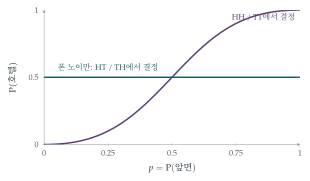

STEP I 2019, 문제 11
다음으로 넘어가기 전에 문제를 먼저 읽어 보자. 이 문제는 OCR에서 내려받을 수 있는 2019년 STEP 문제지 모음(zip 파일)의 STEP I 문제지에 있다: www.ocr.org.uk/Images/696590-2019-past-papers.zip
도입
공정한 결정을 내려야 하는데, 쓸 수 있는 동전은 휘어진 것 하나뿐이고 얼마나 치우쳐 있는지도 모른다. 그래도 공정하게 고를 수 있을까? 1951년 존 폰 노이만(John von Neumann)이 내놓은 답은 이렇다. 동전을 두 번 던진다. HT가 나오면 호텔을, TH가 나오면 찻집을 고르고, HH나 TT가 나오면 다시 두 번 던진다. HT와 TH는 둘 다 확률(probability)이 \(pq\)이므로, \(p\)가 무엇이든 이 결정은 완벽하게 공정하다.
이 문제의 절차는 그 반대이다. HH와 TT에서 결정하므로 빠르지만 공정하지 않다(호텔을 고를 확률은 \(\frac{p^2}{p^2 + q^2}\)이다). 문제는 어떤 동전을 쓰더라도 이 절차가 결코 오래 걸리지 않음을 보여 준다. 두 절차를 비교하면 무작위성을 만들어 낼 때의 기본적인 맞교환, 곧 속도와 공정성 사이의 맞교환이 드러난다.
시작하기 전에
한 라운드에서 결정이 내려질 확률은 얼마인가? 결정이 내려지지 않을 확률은? \(2pq\)가 가질 수 있는 가장 큰 값은 얼마인가?
동전들이 일치하면 결정이 내려지며, 그 확률은 \(p^2 + q^2\)이다. 그렇지 않으면 확률 \(2pq\)로 계속 진행한다. \(pq = p(1 - p) \leq \frac14\)이고(등호는 \(p = \frac12\)일 때 성립한다), 따라서 \(2pq \leq \frac12\)이다.
차근차근 풀기
단계 1 \(n\)번째 라운드에서의 결정
각 라운드는 독립(independent)이다. \(n\)번째 라운드에서 결정이 내려지려면 \(n - 1\)번의 라운드 동안 동전이 일치하지 않고, 그다음에 일치해야 한다. \[\mathrm{P}(\text{결정이 일어나는 라운드 } n) = (2pq)^{n-1}(p^2 + q^2). \qed\]
단계 2 \(n\)번째 라운드까지의 결정
처음 \(n\)번의 라운드에서 결정이 내려지지 않을 확률은 얼마인가?
\(n\)번의 라운드 동안 결정이 내려지지 않을 확률은 \((2pq)^n \leq \bigl(\frac12\bigr)^n\)이므로, \(p\)가 무엇이든 \(n\)번째 라운드까지 결정이 내려질 확률은 적어도 \(1 - \frac{1}{2^n}\)이다.■
단계 3 세 사람
첫 라운드에서 앞면이 둘, 뒷면이 하나 나온 뒤, 세 번째 사람이 뒷면을 앞면으로 뒤집어 놓는다. 둘째 라운드에서 결정이 내려지려면 무엇이 일어나야 하는가? 뒷면이 둘, 앞면이 하나 나온 경우에는 어떠한가?
첫 라운드에서 결정이 내려질 확률은 \(p^3 + q^3\)이다. 그렇지 않으면 두 동전은 일치하고 하나는 다르다. 다수가 앞면이면(확률 \(3p^2q\)) 다른 동전 하나를 앞면으로 뒤집어 놓으므로, 둘째 라운드에서 결정이 내려지려면 나머지 두 사람이 앞면을 던져야 한다. 그 확률은 \(p^2\)이다(이제 모두 뒷면이 되는 것은 불가능하다). 마찬가지로 다수가 뒷면이면(확률 \(3pq^2\)) 결정이 내려지려면 뒷면이 두 번 나와야 하며, 그 확률은 \(q^2\)이다. 따라서 \[\mathrm{P}(\text{결정, 늦어도 라운드 } 2) = p^3 + q^3 + 3p^2q\cdot p^2 + 3pq^2\cdot q^2.\]
모든 것을 \(s = pq\)로 나타내어라. (\(p + q = 1\)을 이용한다.)
\(p^3 + q^3 = (p + q)^3 - 3pq(p + q) = 1 - 3s\)이고 \(3p^4q + 3pq^4 = 3s(p^3 + q^3) = 3s(1 - 3s)\)이다. 따라서 \(s \leq \frac14\)이므로 \[\mathrm{P} = 1 - 3s + 3s - 9s^2 = 1 - 9s^2 \geq 1 - \frac{9}{16} = \frac{7}{16},\] 이다.■
돌아보기
여사건(complement). “\(n\)번째 라운드까지 적어도 한 번”은 \(1 -\) (“\(n\)번의 라운드 동안 한 번도 없음”)으로 계산하는 것이 가장 쉬웠다.
최악의 경우를 한정하기. 알 수 없는 \(p\)는 부등식(inequality) \(pq \leq \frac14\)로 처리했다.
대칭함수(symmetric function). \(p\)와 \(q\)에 대하여 대칭인 식은 \(p + q = 1\)과 \(pq\)로 나타내면 간단해진다.
숨은 수학
폰 노이만의 기법
문제의 절차는 빠르지만 치우쳐 있다. 폰 노이만의 절차는 공정하다. 두 번 던져서 HT나 TH이면 결정하고, HH나 TT이면 반복한다. 각 시도는 확률 \(2pq\)로 성공하므로 평균 \(\frac{1}{2pq}\)번의 시도가 필요하며, 동전이 매우 치우쳐 있으면 느리다(그림 12.9.1). 문제의 절차는 라운드마다 확률 \(p^2 + q^2 \geq \frac12\)로 결정을 내리지만, \(p > \frac12\)이면 그 답은 호텔 쪽으로 기운다.

무작위성 추출
폰 노이만의 기법은 최초의 무작위성 추출기(randomness extractor), 곧 불완전한 무작위성을 완전한 무작위성으로 바꾸는 절차이다. 이 기법은 낭비가 많다(두 번 던질 때마다 공정한 비트를 많아야 하나 얻고, 하나도 얻지 못할 때도 많다). 더 나은 방법들은 버려진 HH와 TT 쌍을 재활용하여 동전에 담긴 무작위성을 거의 전부 추출하는데, 그 양은 던질 때마다 엔트로피(entropy) \(-p\log_2p - q\log_2q\)비트로 측정된다. 추출기는 컴퓨터의 하드웨어 난수 생성기에 쓰인다. 이 생성기는 예측할 수 없지만 치우친 물리적 잡음을 모아서, 암호에 쓸 수 있도록 치우치지 않은 비트로 바꾸어야 한다.
존 폰 노이만은 1951년 논문 “Various techniques used in connection with random digits”(난수와 관련하여 쓰이는 여러 기법)에서 이 기법을 설명했다. 이 논문은 그와 동료들이 핵무기 설계를 위해 최초의 컴퓨터 시뮬레이션 몇 가지(“몬테카를로 방법(Monte Carlo method)”)를 수행하던 시기에 쓰였다. 같은 논문에서 그는 산술로 난수를 만들어 내는 일에 대해 유명한 말을 남겼다. “산술적 방법으로 난수를 만들어 내려는 사람은 누구든, 당연히, 죄를 짓고 있는 상태이다.”
사고 기술
매개변수를 모를 때는 그 값과 상관없이 확률이 같은 사건을 찾아, 그 사건들을 바탕으로 결정하라.
HT와 TH는 확률이 \(pq\)로 같으므로, 둘을 비교하면 \(p\)가 완전히 사라진다. 대학에서는 같은 아이디어가 통계학의 피벗량(pivotal quantity)과, 무작위화(randomisation)와 대칭성으로 알 수 없는 효과를 상쇄하는 실험 설계(design of experiments)에서 나타난다.
더 도전하기
라운드 수의 기댓값. 소문항 (i)의 절차와 폰 노이만의 절차에 대하여 라운드 수의 기댓값(expected value)을 구하여라. 어떤 \(p\)에 대하여 폰 노이만의 절차가 더 느린가?
공정한 셋 중 하나 고르기. 치우친 동전을 사용하여 세 가지 선택지 가운데 하나를 각각 정확히 확률 \(\frac13\)로 고르는 절차를 고안하여라.
공정한 동전으로 만드는 치우친 동전. 공정한 동전을 사용하여 앞면이 나올 확률이 정확히 \(\frac13\)인 동전을 흉내 내는 절차를 고안하여라. 던지는 횟수의 기댓값은 얼마인가?
다시 세 사람. 소문항 (ii)에서 그들이 호텔에 갈 확률을 \(p\)의 함수로 나타내면 무엇인가? \(p = \frac12\)일 때 이 절차는 공정한가?
더 읽을거리
John von Neumann, “Various techniques used in connection with random digits”, National Bureau of Standards Applied Mathematics Series 12 (1951). 짧고 유명한 논문이다.
Donald Knuth, The Art of Computer Programming, Vol. 2 (Addison-Wesley), 난수를 다룬 3장.
Michael Mitzenmacher & Eli Upfal, Probability and Computing (Cambridge University Press), 무작위성 추출과 엔트로피를 다룬다.